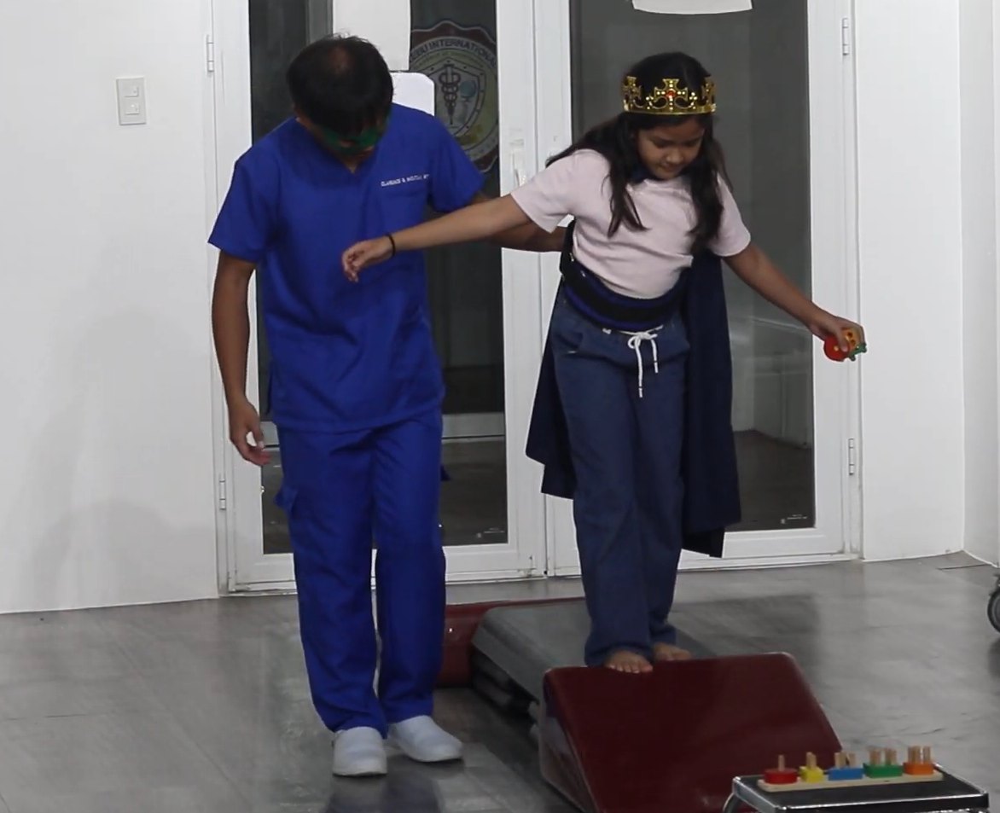

What is Gait Training?
Balance, walking, and gait training focus on helping children develop or regain the ability to move safely and confidently. Whether your child is learning to walk for the first time, recovering from an injury, or navigating a neurological condition, this therapy uses fun, supportive strategies to improve posture, muscle control, and balance.
Therapy Goals and Benefits:
- Improves walking mechanics and alignment
- Boosts leg strength and coordination
- Enhances posture and balance reactions
- Reduces risk of falls and instability
- Encourages independence in mobility